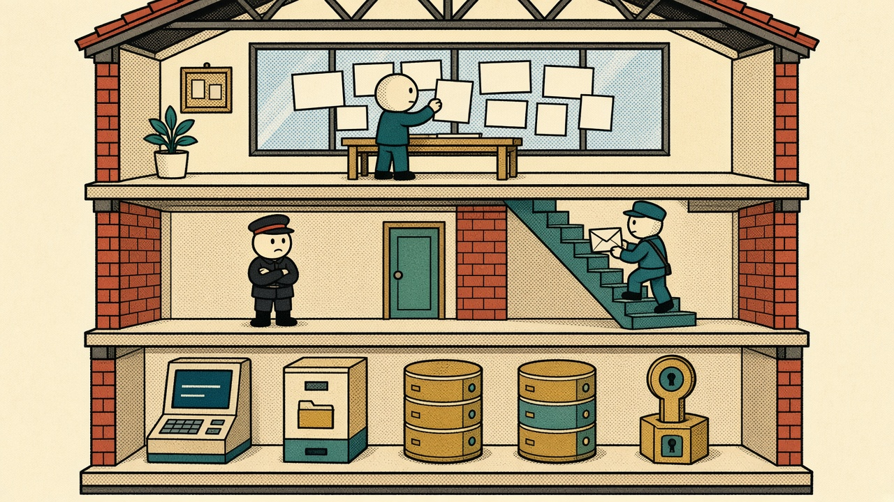
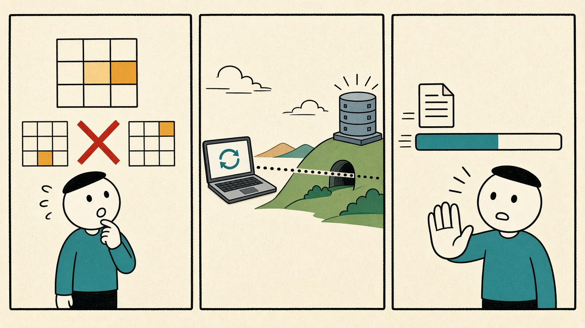
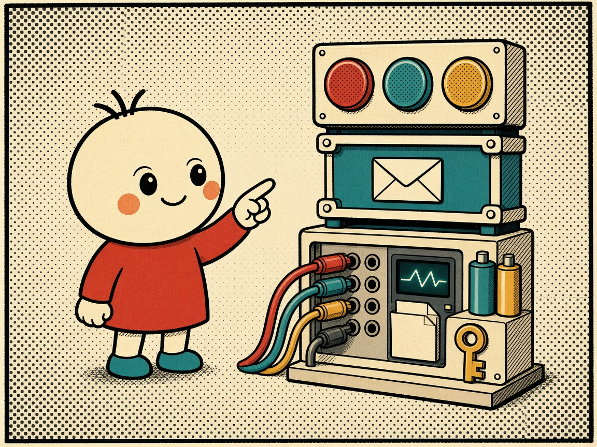
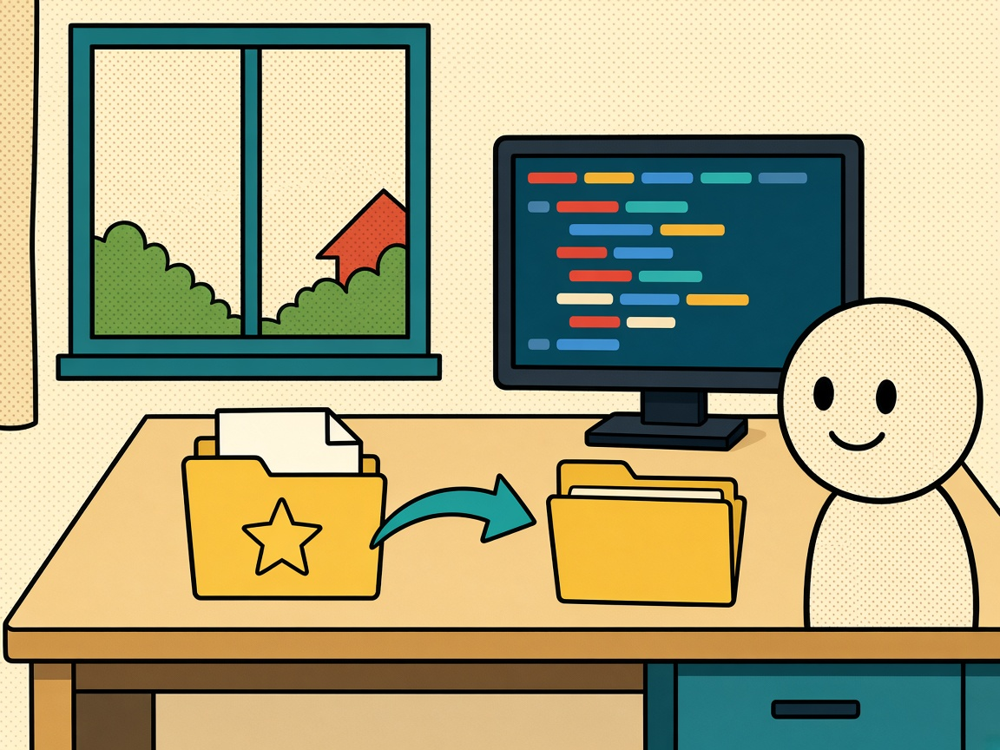
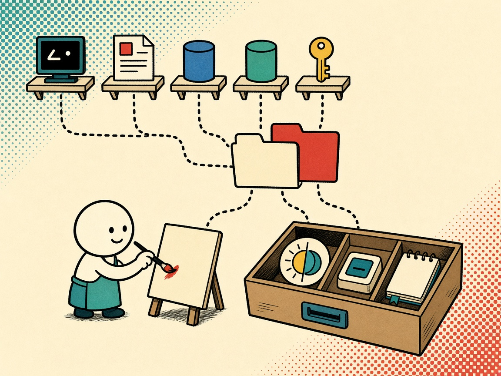

界面
Vue 3 工作区。侧栏、会话标签、CodeMirror 编辑器、xterm 终端和结果表都在这里。主题可以跟系统走。这里不保存密码。

界面要好改，连接要安全。密码、私钥和文件对话框都留在主进程。渲染进程只能按约定发请求，不能自己去读磁盘或直连数据库。
Vue 3 工作区。侧栏、会话标签、CodeMirror 编辑器、xterm 终端和结果表都在这里。主题可以跟系统走。这里不保存密码。
↓ 请求 ↑ 事件
preload 用 contextBridge 只露出一份 DesktopApi。查询走 invoke，终端按键走 send，主进程的输出用事件送回来。图里那个送信的，就是这条通道。
↓ 交给会话 ↑ 结果回流
SessionManager 管每条会话的生命周期。配置校验、主机指纹、系统加密凭据、项目和操作日志都在这一层。五台驱动各干各的，关标签时一起收掉。
保存过的配置留在本机。点连接时，界面只把这份配置交给桥。测试连接会真实连上再马上断开，不打开标签。
端口、路径、必填项不过关，就不会去碰服务器。密码和私钥口令用系统加密保存，渲染进程拿不到一份可以随意读取的副本。
第一次见面弹出指纹，核对后才信任。之后可以开终端、看 SFTP，或从这台机器转发出去。密钥变了会再问一次。
文件库或
:memory:
试验台都丢给工作线程。界面继续能点。写进已有文件会真的改那个文件。
可以直接连。如果选了一份已保存的 SSH，会先为这条库会话打一条只监听 127.0.0.1 的隧道，再用本地端口走过去。
标签代表一条独立会话。断开连接会留下标签，方便重连。真正关闭时，数据库会话、SSH 隧道、终端和传输一起释放。库断开，借来的隧道也拆。
分岔在第 3 步。三种颜色是三条路，最后都回到同一句：会话有主人，关闭要归还资源。

一次最多留下 1000 行或 4 MB。到上限就停，不会偷偷改写你的 SQL。点停止会断开整条会话，已经提交的写入不保证回滚，需要重连。
可以跑整段脚本，也可以只跑选中的部分。补全只用本机已经看到的表和字段，不把 SQL 送出去。
这条连接上的请求按顺序走，不会两个人同时抢一个会话。SQL 多结果集可以切换，默认先看到最后一次成功的结果。
SQLite 在工作线程。MySQL、PostgreSQL 流式消费。Redis 用 SCAN 翻页，不用 KEYS 扫整库。表格单元格编辑还会先看有没有被别人改过。

第 1 话 · 2026-10-05
Electron 窗口加上 Vue 3 工作区，SSH、SQLite、MySQL、PostgreSQL、Redis 进同一张桌子。深色、亮色、跟随系统。SSH 要确认指纹，凭据进系统加密，Redis 先按命名空间看，不一次拉完整库。

第 2 话 · 2026-10-06
连接可以分组、收藏、排序、复制，断线后手动重连。标签和 SQL 草稿会回来，历史和收藏也能找回。编辑器有高亮和本地补全。SSH 可以分屏，SFTP 能批量传，Redis 集合能改，TTL 能批量设。
第 3 话 · 2026-10-08
表可以在服务端分页、排序、筛选，改单元格前先查冲突。SFTP 能改名、确认删除、看进度，取消传输时 SSH 还在。Redis 六种键都能新建。库可以借用已保存的 SSH 打隧道。Another Redis Desktop Manager 的配置能预览后导入，重复跳过，密码加密保存。版本日志和更新检查也在这天接上。

第 4 话 · 2026-10-09
侧栏按五种类型固定分组，原来的自定义分组迁成项目。项目可以跨类型选成员，同一个连接可以进多个项目。名字可以完整换行。收藏、编辑、复制、删除收进菜单。每个连接能自己选已连接时的底色。设置里集中放主题、更新、快捷键和配置导入导出。操作日志留在本机，凭据和操作内容不写进去。